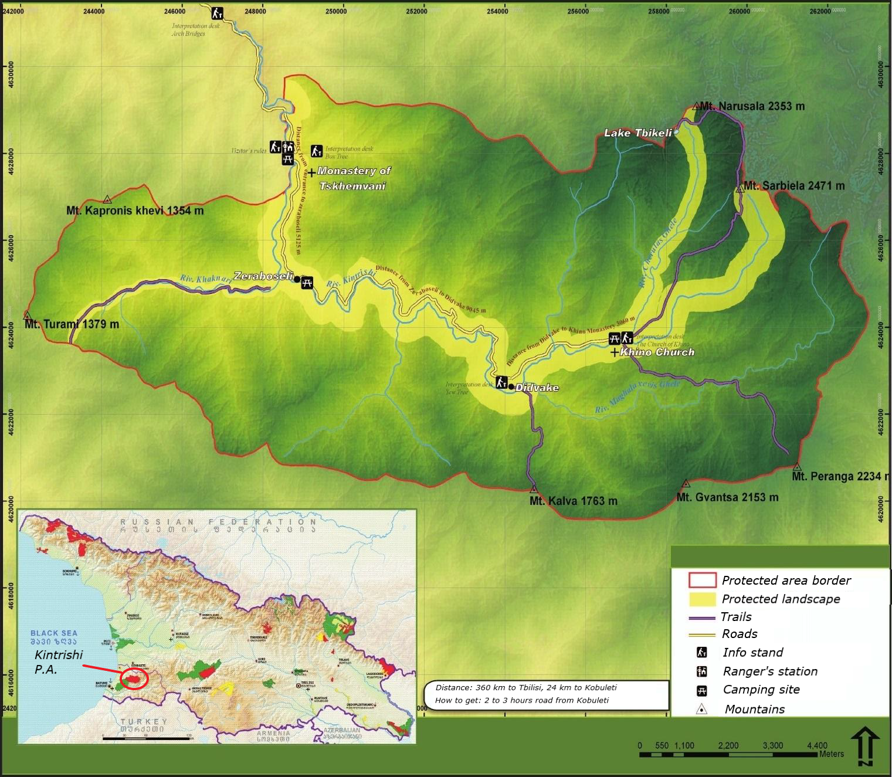
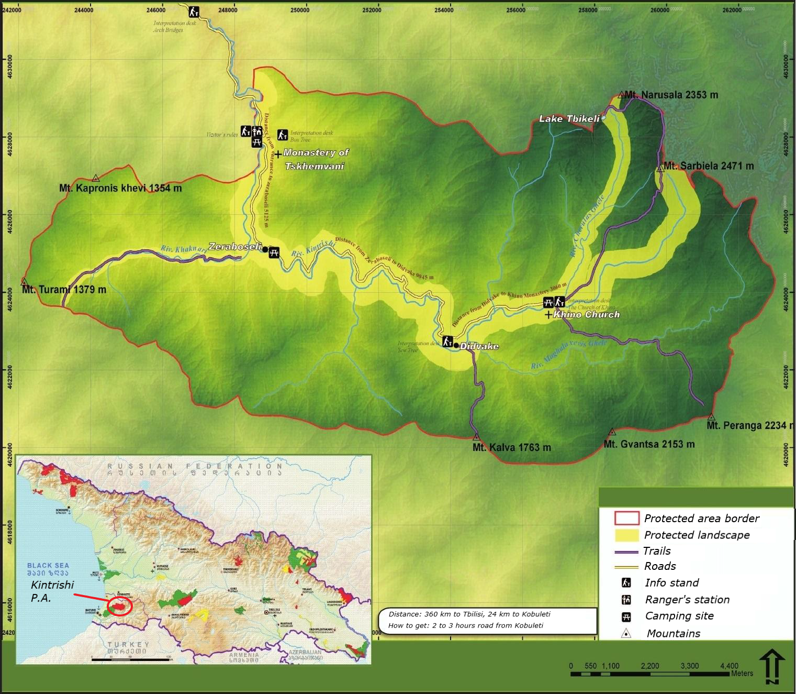

About
Kintrishi club project is a dedicated website for all people who enjoy the beauty of local rivers and in particular - Kintrishi river. The love for your ancestral homeland starts with adoration of its nature. The environment, in which people live in, shape the state of happiness and satisfaction from life. The smallest peculiarities of our day to day scenery are inprinted in our mind and I believe are one of the few fings that makes all people unique. Neighbours can live for generations in the same village but do we really know what happens beside the next gorge or within a mile from our house? Do we care enough about our habitat and preservation of its beauty?
Kintrishi (Georgian: კინტრიში) is a river in the Adjara region in southwestern Georgia. The Kintrishi rises in the Meskheti Range near Mount Khino, at an elevation of 2,599 metres above sea level. The Kintrishi passes the village of Chino and takes on the left tributary of Cherkena. The river then turns north and cuts through a mountain range. Later it turns west again. In the coastal plain it still takes on the Kinkischa on the left side and finally reached on the southern outskirts of Kobuleti by a spit almost completely separated from the Black Sea estuary. The Kintrishi has a length of 45 km. It drains an area of 291 km2.
Kintrishi gorge is a part of Colchian world. The ancestors of the Kobuleti settlement still settled in the Stone Age, and they have a definite way of divine nature. The region is rich with stone bridges constructed during "The Golden Age" of Georgia, churches and ruins of ancient forts and castles
Gallery


Kintrishi National Park

Kintrishi Protected Areas is located in Adjara Autonomous Republic (Kobuleti Municipality) with a total area of 13,893 ha. It is located in a picturesque valley of the river Kintrishi, between village Tskhemvani and Khino Mountains, at an altitude of 300-2,500 meters above sea level. Protected areas are bordered with Kobuleti forest administration from the north, Shuakhevi municipality area from the east, Qeda municipality from the south and Mtirala National Park from the south-west. Kintrishi Protected Areas Administration manages two different types of protected areas - State Nature Reserve and Protected Landscape. Kintrishi State Nature Reserve was established in 1959 and its purpose is to protect relict forest and endemic species, flora and fauna of Shuamta.
Kintrishi Protected Areas along with Mtirala National Park and Machakhela National Park form a chain of protected area units established to conserve the Colchic forest of the region. However, each protected area has its own particularities that should be further enhanced and promoted. As part of the Euxine-Colchic deciduous forests ecoregion along an elevational gradient. Kintrishi Strict Nature Reserve contains a wide diversity of ecosystems, including lowland forests and montane meadows. Over 900 species of plants are found in the area, including the Common hornbeam, Oriental beech, and Caucasian fir.
Kintrishi protected Areas cover two climatic zones: 1. humid climate with cold winter and long hot summer; 2. humid climate with cold snowy winter and short summer. The rugged surface of the complex relief of the protected areas of Kintrishi and deep gorges cause frequent changes of climatic elements. The inner mountainous part is characterized with quite warm summer. The lowest temperature on the reserve territory is in January, February and March. The warmest months are June, July and August. The average temperature in August is +24 degree, in January +4 degree. The average annual precipitation on the protected areas do not drop below 200 mm and grows with altitude and reaches 3,000 mm.
Kintrishi National Park
Kintrishi Protected Areas is located in Adjara Autonomous Republic (Kobuleti Municipality) with a total area of 13,893 ha. It is located in a picturesque valley of the river Kintrishi, between village Tskhemvani and Khino Mountains, at an altitude of 300-2,500 meters above sea level. Protected areas are bordered with Kobuleti forest administration from the north, Shuakhevi municipality area from the east, Qeda municipality from the south and Mtirala National Park from the south-west. Kintrishi Protected Areas Administration manages two different types of protected areas - State Nature Reserve and Protected Landscape. Kintrishi State Nature Reserve was established in 1959 and its purpose is to protect relict forest and endemic species, flora and fauna of Shuamta.
Kintrishi Protected Areas along with Mtirala National Park and Machakhela National Park form a chain of protected area units established to conserve the Colchic forest of the region. However, each protected area has its own particularities that should be further enhanced and promoted. As part of the Euxine-Colchic deciduous forests ecoregion along an elevational gradient. Kintrishi Strict Nature Reserve contains a wide diversity of ecosystems, including lowland forests and montane meadows. Over 900 species of plants are found in the area, including the Common hornbeam, Oriental beech, and Caucasian fir.
Kintrishi protected Areas cover two climatic zones: 1. humid climate with cold winter and long hot summer; 2. humid climate with cold snowy winter and short summer. The rugged surface of the complex relief of the protected areas of Kintrishi and deep gorges cause frequent changes of climatic elements. The inner mountainous part is characterized with quite warm summer. The lowest temperature on the reserve territory is in January, February and March. The warmest months are June, July and August. The average temperature in August is +24 degree, in January +4 degree. The average annual precipitation on the protected areas do not drop below 200 mm and grows with altitude and reaches 3,000 mm.